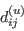

|
Langley Research CenterTurbulence Modeling Resource |
GLVY stress-epsilon Full Reynolds-stress Model
This web page gives detailed information
on the equations for the GLVY full second-moment Reynolds-stress model that
uses an equation for the scale-determining variable.
Full second-moment Reynolds-stress models are very different from simpler 1- and 2-equation
linear/nonlinear models, in that the latter use a constitutive relation giving
the Reynolds stresses
in terms of other tensors via some assumed relation (such as Boussinesq's hypothesis).
On the other hand, full second-moment Reynolds stress models compute each of the 6 Reynolds stresses
directly (the Reynolds stress tensor is symmetric so there are 6 independent
terms). Each Reynolds stress has its own transport equation.
There is also a seventh transport equation for the lengthscale-determining variable.
Unless otherwise stated, for compressible flow with heat transfer this model is implemented as described on the page
Implementing Turbulence Models into the Compressible RANS Equations, with perfect gas
assumed and Pr = 0.72, Prt = 0.90, and Sutherland's law for dynamic viscosity.
Return to: Turbulence Modeling Resource Home Page GLVY stress-epsilon Full Reynolds-stress Model (GLVY-RSM-2012)
This model's reference is:
This model is the latest evolution of the GV-RSM-2001 [Gerolymos G.A., Vallet I.: AIAA J. 39(10) (2001) 1833-1842 https://doi.org/10.2514/2.1179],
and is fully
wall-normal-free (the wall-normal distance or direction are not used in
the model). This modeling choice renders inhomogeneous terms active also
away from solid walls, and indeed independently of the presence of
walls
(inhomogeneous terms are also active in free flows and should never be
dropped when using this model).
The variables of the model are the Favre-avergaged second-moments of velocity
and the modified dissipation rate .
Using the notation of this website, in relation to
which is used in the mean-flow equations,
as described on the page
Implementing Turbulence Models into the Compressible RANS Equations), we have:
Notations are different from the original reference, to conform with
this website's practices, sometimes driven by html
rendering quality.
The symbol
is used instead of
used in the description of the SSG/LRR-RSM-w2012, or
of
used in the description of the WilcoxRSM-w2006,
to avoid any ambiguity with the use of "hat" (Favre-averaging nonlinear
operator) or of "prime" (Reynolds-fluctuation linear operator).
The model equations for and
are (terms in blue are exact, terms in black are modeled; Eq. numbers in red are closures of various terms; in the
-equation
RHS-terms are already modeled)
where
is the convection tensor,
is the production tensor,
is the molecular-diffusion tensor,
 is the turbulent-diffusion tensor (by the fluctuating velocities),
are the terms containing the fluctuating pressure (velocity/pressure-gradient correlation),
is the rate-of-dissipation tensor, and
are direct compressibility effects
(terms proportional to the fluctuating density transport
,
hence to the difference between Reynolds and Favre averaged velocities).
The modeled terms in (GLVY.1)
(,
,
,
and )
are given by
Concerning the pressure terms, the superscript
denotes slow pressure terms (the original terms that are modeled and the
model itself do not depend on the gradients of mean-flow velocity)
and the superscript
denotes rapid pressure terms (the original terms that are modeled and the model itself depend
linearly on mean-flow velocity-gradients). These apply to pressure-diffusion
(the terms with coefficients
and in (GLVY.11) are slow terms,
while the term with coefficient is a rapid one)
and to redistribution (
and
in (GLVY.9)). Concerning redistribution, the superscript
denotes quasi-homogeneous terms (which do not depend on gradients
of or
),
while the superscript
denotes inhomogeneous terms (which contain gradients
of or
).
All practical flows are inhomogeneous to some extent.
Notes:
Implementation into c-RANS: The model-terms required in the page
Implementing Turbulence Models into the Compressible RANS Equations
are:
Return to: Turbulence Modeling Resource Home Page
Recent significant updates: Responsible NASA Official:
Ethan Vogel
![({\rm GLVY}.1)\qquad
{\color{blue}{\underbrace{\frac{\partial}{\partial t}\left(\overline{\rho}R_{ij}\right)
+\frac{\partial}{\partial x_\ell}\left(\overline{\rho}R_{ij}\hat{u}_\ell\right)}_{\displaystyle C_{ij}}}}=
{\color{blue}{\underbrace{-\overline{\rho}R_{i\ell}\frac{\partial \hat{u}_j}{\partial x_\ell}
-\overline{\rho}R_{j\ell}\frac{\partial \hat{u}_i}{\partial x_\ell}}_{\displaystyle P_{ij}}}}+
{\color{blue}{\underbrace{\frac{\partial}{\partial x_\ell}\left(\breve{\mu}\frac{\partial R_{ij}}{\partial x_\ell}\right)}_{\displaystyle d_{ij}^{(\mu)}}}}
+d_{ij}^{(u)}+\Pi_{ij}-\overline{\rho}\varepsilon_{ij}+K_{ij}](GLVY_stress-epsilon_Full_RSM_files/GLVY_Eqs/img10.png)
![({\rm GLVY}.2)\qquad
{\color{blue}{
\frac{\partial\bar\rho\varepsilon^*}
{\partial t }+\frac{\partial\left(\hat u_\ell\bar\rho\varepsilon^*\right)}
{\partial x_\ell }}}=
\frac{\partial }
{\partial x_\ell}\left[C_\varepsilon\frac{\mathrm{k} }
{\varepsilon^*}\bar\rho R_{m\ell}\frac{\partial\varepsilon^*}
{\partial x_m }
+{\color{blue}{\breve\mu\frac{\partial\varepsilon^*}
{\partial x_\ell }}}
\right]+C_{\varepsilon 1} P_\mathrm{k}\frac{\varepsilon^*}
{\mathrm{k} }
-C_{\varepsilon 2}\bar\rho\frac{{\varepsilon^*}^2}{\mathrm{k}}
+2 \breve\mu C_{\mu} \frac{{\rm k}^2}{\varepsilon^*} \frac{\partial^2 \hat{u}_i}{\partial x_\ell \partial x_\ell} \frac{\partial^2 \hat{u}_i}{\partial x_m \partial x_m}](GLVY_stress-epsilon_Full_RSM_files/GLVY_Eqs/img11.png)

![{\color{red}{({\rm GLVY}.7)}}\qquad
\bar\rho\varepsilon_{ij}=\frac{2}{3}\bar\rho\varepsilon\left(1-f_\varepsilon\right)\delta_{ij}+f_\varepsilon\frac{\varepsilon}{\mathrm{k}}\bar\rho R_{ij}\;\; ; \;\;
\varepsilon=\varepsilon^*+2\breve\nu\frac{\partial \sqrt{\mathrm{k}}}{\partial x_\ell}
\frac{\partial \sqrt{\mathrm{k}}}{\partial x_\ell}\;\; ; \;\;
f_\varepsilon=1-A^{[1+A^2]}\left[1-\mathrm{e}^{-\frac{Re_{\mathrm{\tiny T}}}{10}}\right]\;\; ; \;\;
Re_{\mathrm{\tiny T}} =\frac{\mathrm{k}^2 }
{\breve\nu\varepsilon}](GLVY_stress-epsilon_Full_RSM_files/GLVY_Eqs/img24.png)
![{\color{red}{({\rm GLVY}.11)}}\qquad
d_{ij}^{(p)}=C^{(\mathrm{\tiny Sp1})}\bar\rho\frac{\mathrm{k}^3 }
{\varepsilon^3}\frac{\partial\varepsilon^*}
{\partial x_i }\frac{\partial\varepsilon^*}
{\partial x_j }
+\frac{\partial }
{\partial x_\ell}\left[C^{(\mathrm{\tiny Sp2})}(\overline{\rho u_m''u_m''u_j''}\delta_{i\ell}
+\overline{\rho u_m''u_m''u_i''}\delta_{j\ell})\right]
+C^{(\mathrm{\tiny Rp})}\bar\rho\frac{\mathrm{k}^2 }
{\varepsilon^2}\breve{S}_{k\ell}a_{\ell k}\frac{\partial\mathrm{k}}
{\partial x_i }\frac{\partial\mathrm{k}}
{\partial x_j }](GLVY_stress-epsilon_Full_RSM_files/GLVY_Eqs/img28.png)
![{\color{red}{({\rm GLVY}.13)}}\qquad
\phi_{ij}^{(\mathrm{\tiny R})}=\underbrace{-C_\phi^{(\mathrm{\tiny RH})}\left(P_{ij}-\frac{1}{3}\delta_{ij} P_{mm}\right)}_{\displaystyle\phi^{(\mathrm{\tiny RH})}_{ij}}
\underbrace{+C_\phi^{(\mathrm{\tiny RI})}\left[ \phi^{(\mathrm{\tiny RH})}_{nm}e_{\mathrm{\tiny I}_n}e_{\mathrm{\tiny I}_m}\delta_{ij}
-\frac{3}{2}\phi^{(\mathrm{\tiny RH})}_{in}e_{\mathrm{\tiny I}_n}e_{\mathrm{\tiny I}_j}
-\frac{3}{2}\phi^{(\mathrm{\tiny RH})}_{jn}e_{\mathrm{\tiny I}_n}e_{\mathrm{\tiny I}_i}\right]}_{\displaystyle\phi^{(\mathrm{\tiny RI})}_{ij}}](GLVY_stress-epsilon_Full_RSM_files/GLVY_Eqs/img30.png)
![{\color{red}{({\rm GLVY}.14)}}\qquad
\phi^{(\mathrm{\tiny S})}_{ij}=\underbrace{-C_\phi^{(\mathrm{\tiny SH1})}\bar\rho\varepsilon^* a_{ij}}_{\displaystyle\phi^{(\mathrm{\tiny SH1})}_{ij}}
\underbrace{+C_\phi^{(\mathrm{\tiny SI1})} \frac{\varepsilon^*}{\mathrm{k}}\left[\bar\rho R_{nm}e_{\tsc{i}_n}e_{\tsc{i}_m}\delta_{ij}
-\frac{3}{2}\bar\rho R_{ni}e_{\tsc{i}_n}e_{\tsc{i}_j}
-\frac{3}{2}\bar\rho R_{nj}e_{\tsc{i}_n}e_{\tsc{i}_i}\right]}_{\displaystyle\phi^{(\mathrm{\tiny SI1})}_{ij}}](GLVY_stress-epsilon_Full_RSM_files/GLVY_Eqs/img31.png)
![|\qquad\qquad\qquad\qquad\qquad
\underbrace{-C_\phi^{(\mathrm{\tiny SI2})}\bar\rho\frac{\mathrm{k}}{\varepsilon}\frac{\partial\mathrm{k}}{\partial x_\ell}
\left[ a_{ik}\frac{\partial R_{kj}}{\partial x_\ell}
+a_{jk}\frac{\partial R_{ki}}{\partial x_\ell}
-\frac{2}{3}\delta_{ij}a_{mk}\frac{\partial R_{km}}{\partial x_\ell}\right]}_{\displaystyle\phi^{(\mathrm{\tiny SI2})}_{ij}}
\underbrace{+C_\phi^{(\mathrm{\tiny SI3})}\left[ \phi^{(\mathrm{\tiny SI2})}_{nm}e_{\tsc{i}_n}e_{\tsc{i}_m}\delta_{ij}
-\frac{3}{2}\phi^{(\mathrm{\tiny SI2})}_{in}e_{\tsc{i}_n}e_{\tsc{i}_j}
-\frac{3}{2}\phi^{(\mathrm{\tiny SI2})}_{jn}e_{\tsc{i}_n}e_{\tsc{i}_i}\right]}_{\displaystyle\phi^{(\mathrm{\tiny SI3})}_{ij}}](GLVY_stress-epsilon_Full_RSM_files/GLVY_Eqs/img32.png)
![({\rm GLVY}.15)\qquad
e_{\mathrm{\tiny I}_i}:=\frac{\displaystyle\frac{\partial}{\partial x_i}\Biggl(\frac{\ell_\mathrm{\tiny T}[1-\mathrm{e}^{-{\frac{Re^*_\mathrm{\tiny T}}
{ 30}}}]}
{1+2\sqrt{A_2}+2A^{16}}
\Biggr)
}
{\sqrt{\displaystyle\frac{\partial}{\partial x_\ell}\Biggl(\frac{\ell_\mathrm{\tiny T}[1-\mathrm{e}^{-{\frac{Re^*_\mathrm{\tiny T}}
{ 30}}}]}
{1+2\sqrt{A_2}+2A^{16}}
\Biggr)
\displaystyle\frac{\partial}{\partial x_\ell}\Biggl(\frac{\ell_\mathrm{\tiny T}[1-\mathrm{e}^{-{\frac{Re^*_\mathrm{\tiny T}}
{ 30}}}]}
{1+2\sqrt{A_2}+2A^{16}}
\Biggr)
}
}\;\; ; \;\;
\ell_{\mathrm{\tiny T}}:=\frac{k^\frac{3}{2}}{\varepsilon}](GLVY_stress-epsilon_Full_RSM_files/GLVY_Eqs/img33.png)
![({\rm GLVY}.17)\qquad
C_\phi^{(\mathrm{\tiny RI})}=\max{\left[{\frac{2}{3}-\frac{1}{6C_\phi^{(\mathrm{\tiny RH})}},0}\right]}
\sqrt{\frac{\partial}{\partial x_\ell}\Biggl(\frac{\ell_\mathrm{\tiny T}[1-\mathrm{e}^{-\frac{Re^*_\mathrm{\tiny T}}
{30 }}]}
{1+1.6A_2^{\max(0.6,A)}}
\Biggr)
\frac{\partial}{\partial x_\ell}\Biggl(\frac{\ell_\mathrm{\tiny T}[1-\mathrm{e}^{-\frac{Re^*_\mathrm{\tiny T}}
{30 }}]}
{1+1.6A_2^{\max(0.6,A)}}
\Biggr)
}](GLVY_stress-epsilon_Full_RSM_files/GLVY_Eqs/img35.png)
![({\rm GLVY}.18)\qquad
C_\phi^{(\mathrm{\tiny SH1})}=3.7 A A_2^{\frac{1}{4}}\left[1- \mathrm{e}^{-\left(\frac{Re_{\mathrm{\tiny T}}}
{130 }
\right)^2}
\right]\;\; ; \;\;
C_\phi^{(\mathrm{\tiny SI1})}=\left[-\frac{4}{9}\left(C_\phi^{(\mathrm{\tiny SH1})}-\frac{9}{4}\right)\right]\;
\sqrt{\frac{\partial}{\partial x_\ell}\Biggl(\frac{\ell_\mathrm{\tiny T}[1-\mathrm{e}^{-\frac{Re^*_\mathrm{\tiny T}}
{30 }}]}
{1+2.9\sqrt{A_2}}
\Biggr)
\frac{\partial}{\partial x_\ell}\Biggl(\frac{\ell_\mathrm{\tiny T}[1-\mathrm{e}^{-\frac{Re^*_\mathrm{\tiny T}}
{30 }}]}
{1+2.9\sqrt{A_2}}
\Biggr)
}](GLVY_stress-epsilon_Full_RSM_files/GLVY_Eqs/img36.png)
Other Reynolds stress components should receive the usual symmetric treatment (i.e., zero gradient).
where was defined in (GLVY.3).
where is defined in (GLVY.1)
and is modeled by (GLVY.6).
The approximation stems from the fact that the model, like the majority of Reynolds stress-models, uses the exact term
with an appropriate definition of
[(4), p. 1369, Gerolymos G.A., Joly S., Mallet M., Vallet I.: J. Aircraft 47(4) (2010) 1368-1381 https://doi.org/10.2514/1.47538]
while what appears in the mean-flow Favre-averaged total energy equation is
[(3), p. 1369, Gerolymos G.A., Joly S., Mallet M., Vallet I.: J. Aircraft 47(4) (2010) 1368-1381 https://doi.org/10.2514/1.47538].
6/30/2015 - mention Pr, Pr_t, and Sutherland's law
11/20/2014 - added statement about BC treatment at symmetry planes
Page Curator:
Clark Pederson
Last Updated: 08/12/2024